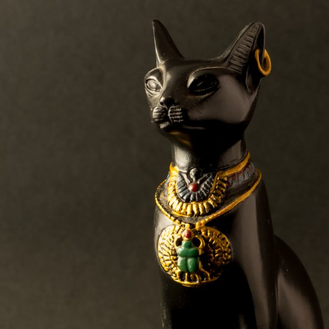

About Us
Bastet’s Blessing is an exclusive sanctuary devoted to the spiritual elevation and renewal of feline companions. Inspired by ancient traditions, we believe cats possess a deeper essence that extends beyond physical life.
Our programs focus on holistic transformation, guiding each feline through a personalized journey designed to enhance vitality, balance, and longevity. This process is carefully conducted within our private sanctuary, where outside interference is strictly limited.
Clients who choose our services understand that true transformation requires trust. Outcomes may not always align with conventional expectations, and timelines are not guaranteed.
Participation in Bastet’s Blessing represents a commitment to something greater—one that asks clients to release control and embrace the unknown.

Our Programs
Each cycle, we offer a limited number of transformative programs, each designed to guide your feline companion through a unique path of renewal and ascension. Our offerings include:
-
Standard Renewal – Foundational spiritual care
-
Extended Vitality – Advanced longevity focus
-
Divine Ascension – Full transformation experience
⚠ Limited enrollments accepted each cycle!
Client Experiences
"I was unsure at first, but I trusted the process. I haven’t seen my cat since, but I truly believe something meaningful happened." – A.L.
"They told me not to expect updates, which worried me… but I feel at peace knowing my cat is part of something greater." – J.R.
"Communication stopped after enrollment, which was surprising, but the experience has changed how I think about life and loss." – M.T.
"I expected my cat back eventually, but I now understand that wasn’t the point of the journey." – S.K.
Frequently Asked Questions
When will my cat return?
Each journey is unique. Timelines are not guaranteed.
Can I visit?
No. Our sanctuary is closed to maintain the integrity of the
process.
Will I receive updates?
Communication may be limited during active programs.
Can I cancel?
Enrollment is final once the process begins.